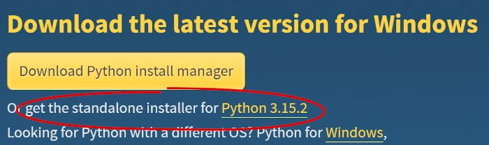
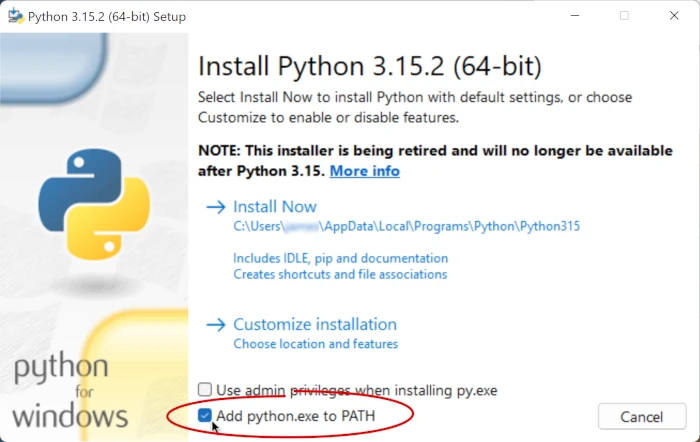
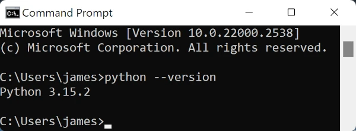
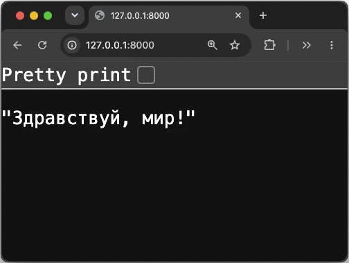
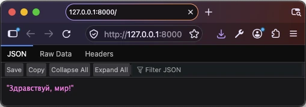
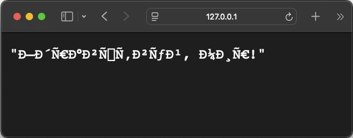

Python-and-PostgreSQL
A backend for a MeetUp-like web app
November 2026
Setting up your Work Environment
You will need the following apps installed on your development computer in order to complete this tutorial. How you do this depends on your Operating System.
Windows
Python 3
You can download Python from the official website.

Choose the standalone installer, because this gives you the option of
checking the Add python.exe to PATH button before you click
Install Now.

This is important, because it allows you to run Python from the command line.

PostgreSQL
MacOS
Python
You can download Python from the official website, or you can run:
brew install pythonAfter installation, you need to run a script to ensure Python 3 is recognized in your terminal:
- Navigate to the Applications folder.
- Find the Python 3.x folder.
- Right-click on Update Shell Profile.command and select “Open.” This will configure your terminal to recognize the python3 command.
To check that python3 is available on the command line,
run:
python3 --versionIf Python 3 is installed correctly, you should see the version number displayed.
PostgreSQL
To install PostgreSQL, and ensure that it is running, use the following commands:
brew install postgresql@16
brew services start postgresql@16Linux
Python 3
Python 3 is usually pre-installed. To make sure that you have the latest full version, run:
sudo apt update
sudo apt install -y python3-full
python3 --versionIf Python 3 is installed correctly, you should see the version number displayed.
You will also need pip for installing packages:
sudo apt install -y python3-pipVS Code
Download Virtual Studio CodeA Basic Python Server
A key feature of this project is that it provides an API (Application Programming Interface) that allows a browser to communicate with a server, and through it, with a database.
You can think of an API like the waiters in a restaurant. When you enter the restaurant, all the tables are arranged in public in a standard way. The kitchen is often invisible. A customer will talk to a waiter who will take the message into the kitchen, and, a short while later, the customer will receive the specific food that they ordered.
In a news page in a browser, for example, articles and images will be arranged in a standard way, but depending on what links the visitor chooses, the specific data in the page will change.
FastAPI
FastAPI is like a restaurant infrastructure. It is a framework that provides all the features that you need create a robust API, along with possibility to customize these features to your specific needs.
Before you can open a new restaurant, you must have a building, with an electricity supply, a gas supply, plumbing, and all the equipment like stoves and fridges that the staff will need.
Before you can use FastAPI, you must do something similar. Fortunately, installing the structure for FastAPI is much faster than building a restaurant, and it is cost-free.
A Virtual Environment for FastAPI
Here’s how to get started, with an ultra-simple Python server. In a Terminal window, in the directory where you want to create your project, run the following commands:
mkdir event_assistant # create the project directory
cd event_assistant # enter the project directory
python3 -m venv .venv # create a Virtual EnvironmentThe line python3 -m venv .venv will create a directory
called .venv (for Virtual ENVironment) in your
event_assistant project directory.
The dot (.) as the first character of the name will make the
.venv folder invisible. This is the convention, but you can
ignore it. Even the name .venv is a convention: you could
call it “george”, and use “george” instead of .venv
everywhere, but your colleagues will not appreciate this.
Contents of .venv
./
└── .venv/
├── .gitignore
├── bin/
│ ├── activate
│ ├── activate.csh
│ ├── activate.fish
│ ├── Activate.ps1
│ ├── pip*
│ ├── pip3*
│ ├── pip3.15*
│ ├── python -> python3.15*
│ ├── python3 -> python3.15*
│ └── python3.15 -> /Library/Frameworks/Python.framework/Versions/3.15/bin/python3.15*
├── include/
├── lib/
│ └── python3.15/
└── pyvenv.cfgActivating the Virtual Environment
Currently, if you run the command…
which python3… the output will be something like:
/Library/Frameworks/Python.framework/Versions/3.15/bin/python3And if you run the command…
which python… the output is likely to be:
python not foundThe following command activates the virtual environment:
source .venv/bin/activate # activate the Virtual EnvironmentNow, if you run the command…
which python3… the output will be something like:
/Users/full/path/to/event_assistant/.venv/bin/python3And:
which python… will show something like:
/Users/full/path/to/event_assistant/.venv/bin/pythonIn other words, now that you have activated the virtual environment, python3 and pip commands now point to the copies inside .venv, instead of the system-wide ones. This is important, because different projects may require different versions of the same package.
Your next step is to use pip, the Python package
manager, to install FastAPI locally. If you did not use a virtual
environment for all your projects, you would be forced to use the same
globally installed version in all your other projects, too.
Installing FastAPI in the Virtual Environment
Run the following command to install FastAPI
pip install "fastapi[standard]" # install with the standard extrasYou should see a rush of text in the Terminal window as
pip downloads the files needed by FastAPI. These will
appear in your .venv directory:
Updated contents of .venv
./
└── .venv/
├── .gitignore
├── bin/
│ ├── activate
│ ├── activate.csh
│ ├── activate.fish
│ ├── Activate.ps1
│ ├── agent-detector*
│ ├── detect-installer-test*
│ ├── dotenv*
│ ├── email_validator*
│ ├── fastapi*
│ ├── httpx*
│ ├── httpx2*
│ ├── idna*
│ ├── markdown-it*
│ ├── normalizer*
│ ├── pip*
│ ├── pip3*
│ ├── pip3.15*
│ ├── pygmentize*
│ ├── python -> python3.15*
│ ├── python3 -> python3.15*
│ ├── python3.15 -> /Library/Frameworks/Python.framework/Versions/3.15/bin/python3.15*
│ ├── typer*
│ ├── uvicorn*
│ ├── watchfiles*
│ └── websockets*
├── include/
├── lib/
│ └── python3.15/
└── pyvenv.cfgWith all this infrastructure in place, it’s time to cook a first simple meal.
A Simple Hello World Server
Below is the Python code for a FastAPI server that responds to requests for the root path with “Hello World!” (in Russian, to check how browsers will handle Unicode) (source).
Create a file called main.py inside your
event_assistant project directory, and give it the
following script:
# Import FastAPI class from the fastapi package
from fastapi import FastAPI
# Create an instance of the FastAPI app
app = FastAPI()
# Define a GET route for the root URL ("/")
@app.get("/")
async def read_root() -> str:
# Return a plain text response
return "Здравствуй, мир!"To launch this simple server, run the command:
fastapi dev main.pyYou should see the following output (and more) in the Terminal:
⚡️ Starting FastAPI in development mode
🐍 Using import string: main:app
🌐 Server started at http://127.0.0.1:8000
Documentation at http://127.0.0.1:8000/docsViewing the Response in your browser
Command-click on the link to http://127.0.0.1:8000. Your favourite browser should open to show the server’s response to the request.



Why the Browsers Disagree
The response from the server is a short string of plain text. It is
not in HTML format. Chrome and Firefox guess (correctly) that the string
is in UTF-8 format. Safari makes a different guess: that it
is in Windows-1252.
Fixing the Issue Live
You could hide the problem by replacing the Cyrillic text with Latin
characters. That would not be a solution, but it will show the power of
FastAPI. Edit your main.py file as follows:
# Import FastAPI class from the fastapi package
from fastapi import FastAPI
# Create an instance of the FastAPI app
app = FastAPI()
# Define a GET route for the root URL ("/")
@app.get("/")
async def read_root() -> str:
# Return a plain text response
return "Hello world!"Now, refresh your browser page. You should immediately see the text “Hello world!” appear in your browser.
Your change doesn’t fix the encoding problem. It sidesteps it, because ‘Hello world!’ is pure ASCII, and every browser agrees on ASCII. The Unicode problem is still there, waiting for the next non-Latin string.
What this does demonstrate is something useful. Remark that you did
not stop and restart the server. FastAPI did this for you as soon
automatically as it noticed a change to main.py. That saves
you time.
Responding with HTML
In the next section, you’ll see how to make the server respond to a
request with an HTML page, complete with an entry for
<meta charset="UTF-8">, so that all browsers will
know how to treat the Unicode text.
Introduction
Demand is growing for developers who can use AI to convert a natural language request into valid SQL to query a database.
This tutorial is designed to help you build an “intelligent event assistant” for a web site similar to MeetUp.com. The ultimate goal is to allow end users to type a phrase like…
- “Find me a tech meetup next week that’s free.”
- “What events are happening near Jubilee metro station on Friday evening?”
- “Show me upcoming events about AI or databases.”
… and have the backend convert this into a query for a database, and respond with a useful answer.
It is written for someone who is comfortable with basic programming concepts and has used a database before, but has not yet built a web server.
A Two-Part Tutorial
This tutorial is in two parts:
- Create a backend that uses pre-defined queries for the database
- Add an AI layer that lets a Large Language Model create custom queries for the database.
Toolchain
In building this first part of the project, you will be using the following tools:
The Stack
- Python 3: a scripting language to develop a server
- FastAPI: a framework for communicating between a browser and the server
- Uvicorn: a server to run the Python script and reload it after any changes
- PostgreSQL: a database to hold data about users, groups and meetings
- A database driver (psycopg2-binary) that lets Python talk to PostgreSQL
The Tooling
These are the optional tools that I use during development:
- Postman (for testing)
- Git (for collaboration and version control)
- Virtual Studio Code (for editing code)
Teaching Approach
I do not assume that you have used any of these technologies before. I include detailed explanations of each concept in collapsible sections. If you are a beginner, you can open these and learn precisely what is happening at each step. If you are more advanced, you can skip over these collapsed sections.
Some collapsible sections contain deliberately broken versions of the code, with a challenge to diagnose the problem before reading the explanation. These are optional; the mainline code always works.
I am working on MacOS, and this will be visible from the screenshots. If you are working on a different operating system (such as Windows or Ubuntu) some of the Terminal commands will be different from those shown in the screenshots. Always check the text to choose the right command to use for your operating system.
Steps
This is what you will do as you work through this first part of the tutorial:
- Create a barebones Python server responds with “Hello World!”
- Adapt the server to return an HTML file that says “Hello World!”
- Modify the HTML file and see the change
- Add a button that shows an alert in the browser
- Make the button call the server; server responds with “Success!”
- Connect to PostgreSQL
- Design and create tables (users, groups, meetings)
- Insert dummy data (users, groups, meetings)
- Query the database from the server; return all users, then all meetings
- Add a form to query meetings by group or date; server returns filtered data
- Handle errors (empty form, invalid query)
- Register a user (form + server insert)
- Simplify “login”: store a user ID in a session/cookie, or hardcode a user for now
- Retrieve meetings for the logged-in user (join users → groups → meetings)
- Concept: validate AI-generated SQL before running it (only SELECT, allowed tables, no passwords)
Part Two
The second part of the tutorial will build on the work that you do here. In the second part, you will learn how to allow natural language input and convert it to SQL queries similar to those you already created manually.
By the end, you will have a working natural-language interface to your database, and you will understand how to validate AI-generated SQL before running it.